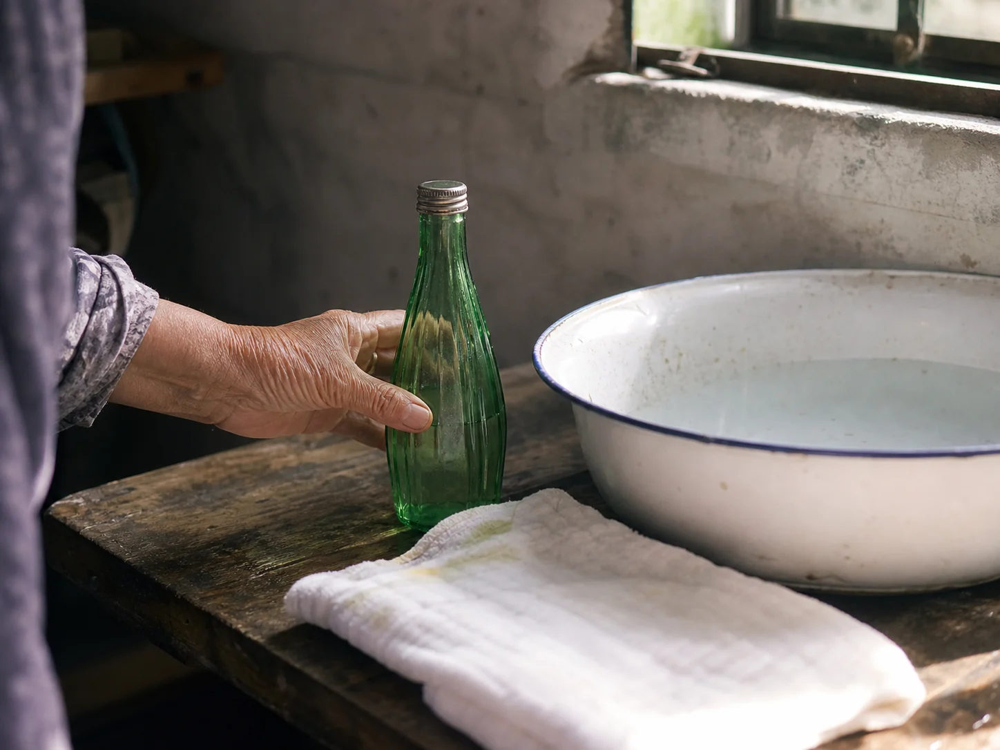

The Green Glass Bottle Beside the Washbasin
I knew the green glass bottle beside my aunt's enamel washbasin by its flower scent, plain metal cap, and place on the highest shelf.

Green glass beside the basin
Summer entered my aunt's washroom through color before it entered through heat. A green glass bottle of flower-scented water stood beside the white enamel basin, catching the narrow strip of light from the window. Sunlight made a green oval on the shelf behind its thick glass base. I could find it even when the room was dim.
The bottle had a plain metal cap and no label I could read. When my aunt opened it, the scent passed the damp towel, the soap dish, and the wooden door all at once. She tipped a little into the basin only after the washing cloth had been rinsed.
One shelf with older objects
I watched her wipe the bottle's threaded neck before replacing the cap. A small green reflection moved across the water as she lifted it, and the scent remained after the basin had been emptied. The basin's blue rim caught the reflection for a moment before the water settled. Nothing else on the shelf carried the same sharp brightness.
The bowl in Rice Water Between Kitchen and Washroom traveled between rooms with its cloudy contents, while this bottle stayed beside one basin. Soap Pods at the Wash Basin brought shells, paper, and a straining cloth into the washing room; the flower-scented water arrived clear in green glass without a printed wrapper.
The cap before dusk
My aunt never left the bottle on the basin rim. After using it, she dried the base with the corner of the towel and raised it to the narrow shelf above the mirror. From the floor, I could see only the green bottom and the shadow it made.
At dusk she returned to check the washroom window and found one drop below the cap. She wiped the glass with her thumb, tightened the metal top, and pushed the bottle to the back of the highest shelf.